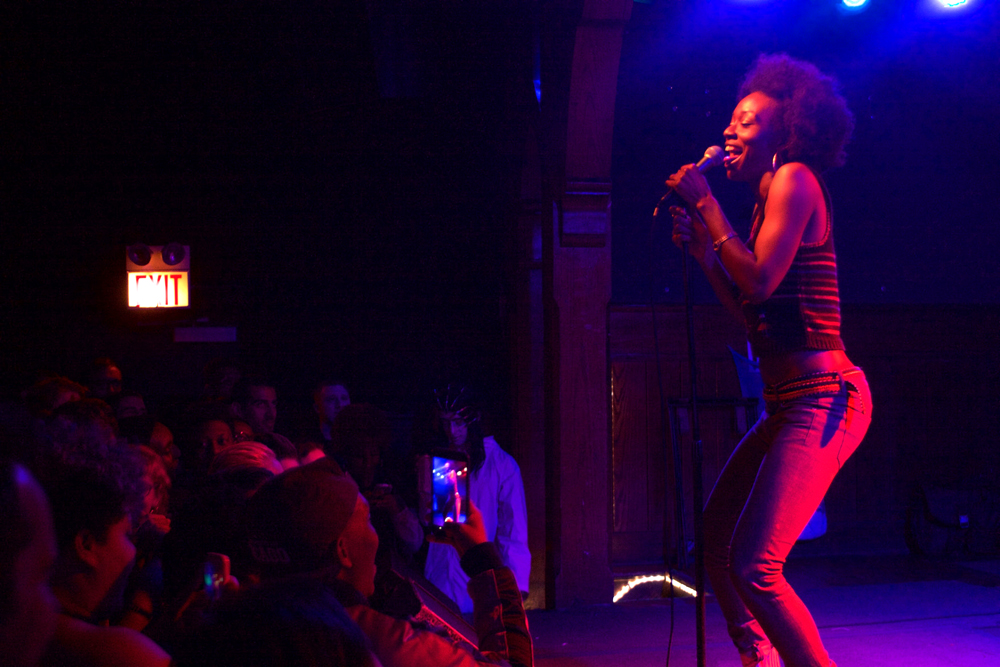
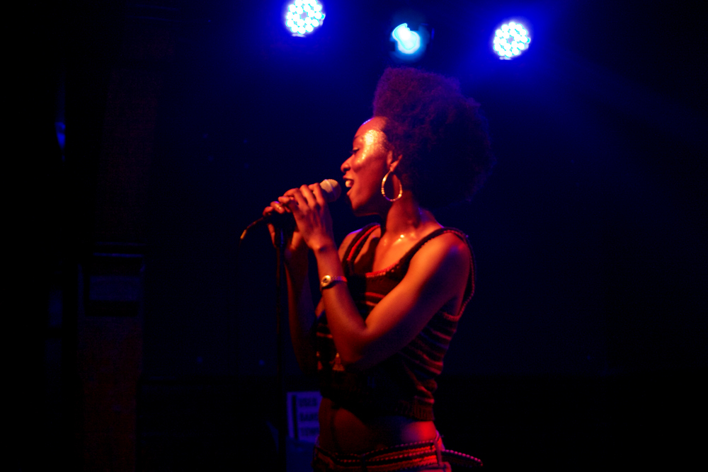
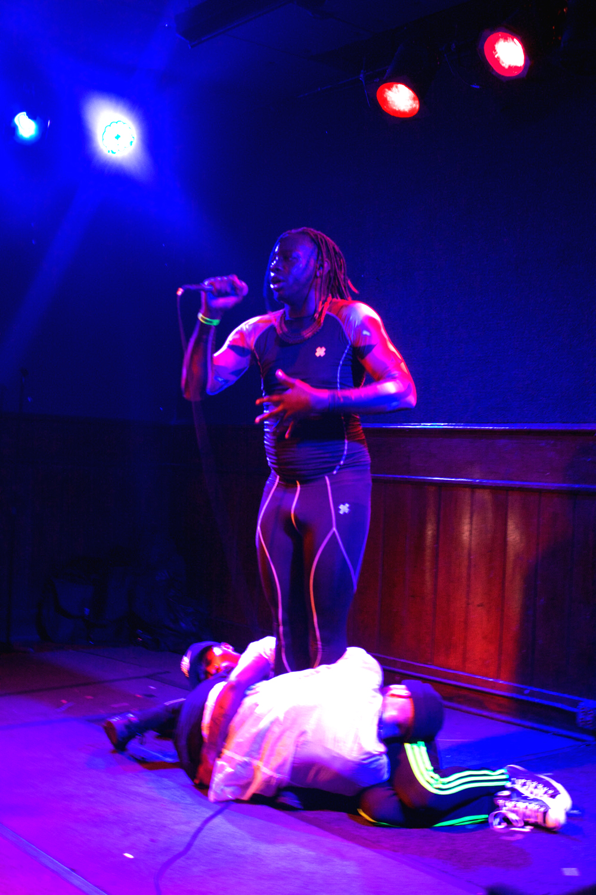
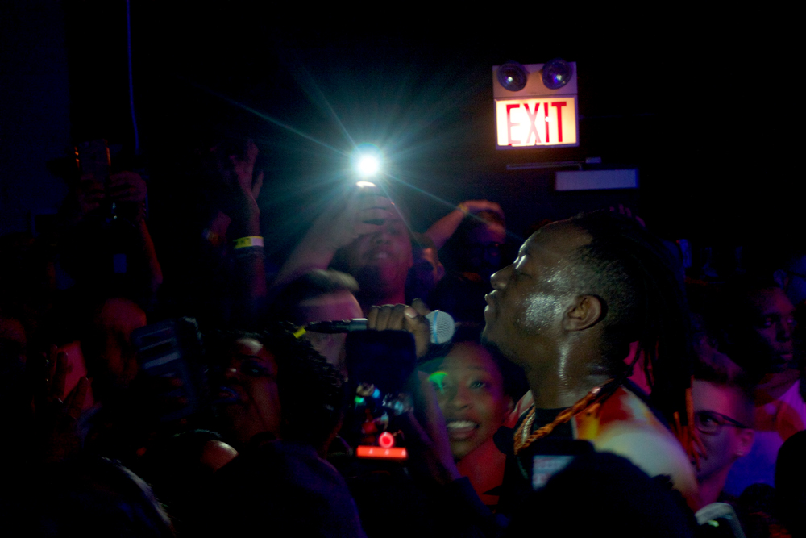

Le1f
On Saturday April 2, Le1f headlined a stacked, sold-out show at Schubas Tavern. Opening up the night was local producer/collaborator/DJ Ariel Zetina and NYC-based indie hip-hop favorite Junglepussy. The backroom venue at Schubas was replete with beautiful queer (and maybe a few straight?) babies dressed to impress and ready to dance.
Ariel Zetina started the evening off with some mixes and borderline-juke music and made the venue feel more like a basement house party than a concert venue – and I mean that in the best way possible. Closing up her set was an amazing new mix of “Not Gonna Get Us,” the opening track of infamous fake-lesbian/real-Russian duo, T.a.t.u.’s debut album, making us all nostalgic for simpler times. If you haven’t been fortunate enough to check Zetina out, yet, she plays regularly throughout Chicago, and her music and schedule is up on her Soundcloud page.
Junglepussy has been supporting Le1f on this tour from the beginning, but was originally not scheduled for some of the shows. People on social media were asking why, oh why, wasn’t she coming to Chicago, too? Alas, just a few days before the show, she announced with a lovely Instagram photo, that she had added eight additional dates to support Le1f’s Riot Boi tour, including Chicago. And she did not disappoint her Chi-town fans.

In fact, if I didn’t know any better, I’d say people were there to see only Junglepussy. When she walked on stage, everyone just lost it. Wearing some tight jeans and a knit top with Caribbean colors, Junglepussy was as comfortable as she was fly. Though she was the only person on stage for her entire set, her presence filled the room and got everyone sweating. With her don’t-fuck-with-me-I-love-myself attitude, she had everyone in the room feeling fun, confident and free. Junglepussy closed her set with the dope track from her Pregnant With Success album, “Pop For You,” telling the audience all how her pussy don’t pop for us. And then walked off the stage and left it at that.

After the two amazing openers, it was around midnight and people were turnt and ready for more. Following an intermission barely long enough to grab a drink at the crowded venue’s bars, the lights came down again. Le1f slowly emerged onto the stage in a most glamorous way, wearing a long, white fur coat, chic round sunglasses, and rocking orange-tipped hair pointing towards the sky.
The show opened up with the song everyone bumped last fall, “Koi,” from the full Riot Boi LP that was released in November of last year. Through the night, Le1f gave us a nice mix of newer songs from his album and older songs from his many EPs. One song that he performed from Riot Boi was “Swirl,” which, on the album features Junglepussy and House of Ladosha, but JP didn’t perform with him for it, oddly enough. Still, he was a force of nature al night; the stage at Schuba’s isn’t very tall, but Le1f’s stage presence made it feel as if he was towering over us as we basked in his fabulousness. Once the white fur coat came off, Le1f had on what appeared to be a two-piece wetsuit and we half-expected us to dive into us and swim about.

Never missing a beat, Le1f did his trademark pseudo-vogue moves and had a couple of dancers back him up on a few songs, as well. There was not a single moment of downtime during Le1f’s 11-song set. Appropriately, the night ended with the track “Rage,” which is exactly what we have done all night – and maybe some of us did some more raging after the show.

Le1f "Koi"
For more from Le1f :
Le1f Website
Le1f on Soundcloud
contributing writer: ilene palacios
photo credits: ciera mckissick